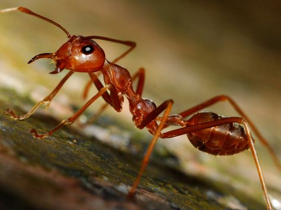

Swip, Scrole, and meet Insects from every corner of the earth!
from prowling predators to diving giants, on lnad and in the sea Insects are everywhere
Featured Insects
Fly
A fly is a small insect with two wings that can fly quickly. Flies often live near people and are known for landing on food and garbage.
Learn MoreButterfly
A butterfly is a colorful insect with large wings. It goes through four life stages: egg, larva (caterpillar), pupa,and adult.
Learn MoreBee
A bee is a flying insect that collects nectar and makes honey. Bees also help pollinate flowers and plants.
Learn MoreBeetle
A beetle is a hard-bodied insect with two pairs of wings. Some beetles are helpful, while others can damage crops.
Learn MoreAnt
An ant is a small insect that lives in colonies. Ants are strong for their size and work together in groups.
Learn MoreLocust
A locust is a type of grasshopper that can form large groups and destroy crops by eating them quickly.
Learn More